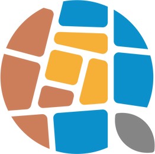

La Q di «Quartiere» nasce dalla porzione di una strada. Gli 11 sanpietrini sono le 11 Case con le loro comunità; il cerchio resta aperto perché il processo non si chiude; al posto del trattino c'è un seme. I colori vengono dalle risorse della città: il mare, il sole, la terra.